W16-W17 <<
Previous Next >> 網頁Cmsimde 建立方法
加入ssh
創建SSH的Key
(1)利用編輯器進入shell的命令環境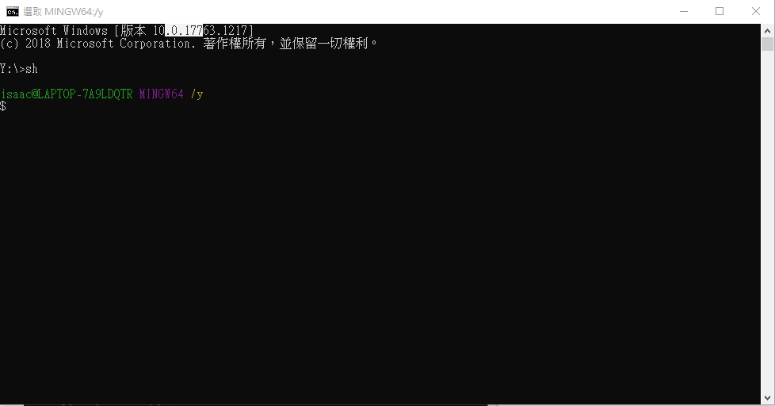
(2)輸入指令
ssh-keygen -t rsa -b 4096 -C "使用者學號"
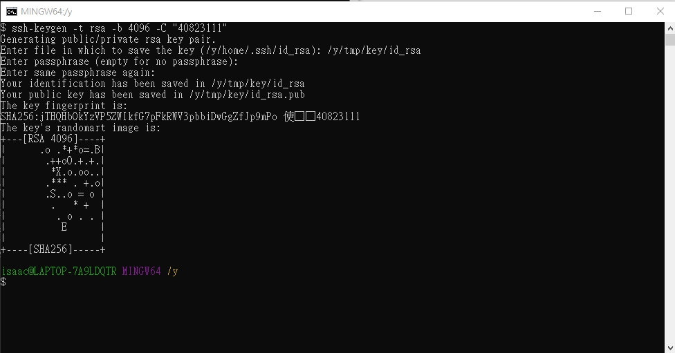
在 /y/tmp/key/id_rsa (自己設要放在哪裡)目錄下建立 id_rsa 與 id_rsa.pub 等 private key 與 public key
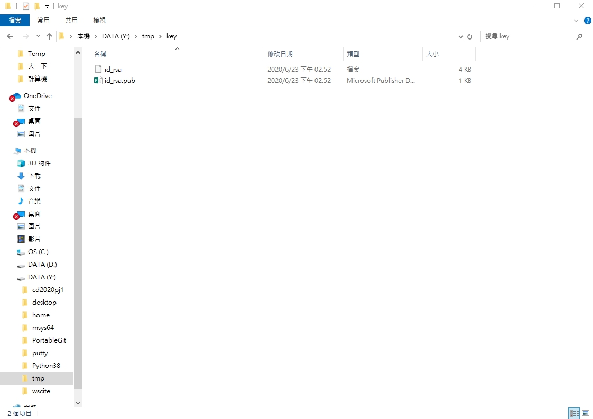
(3)下載 Putty 工具組
接下來要利用 puttygen.exe
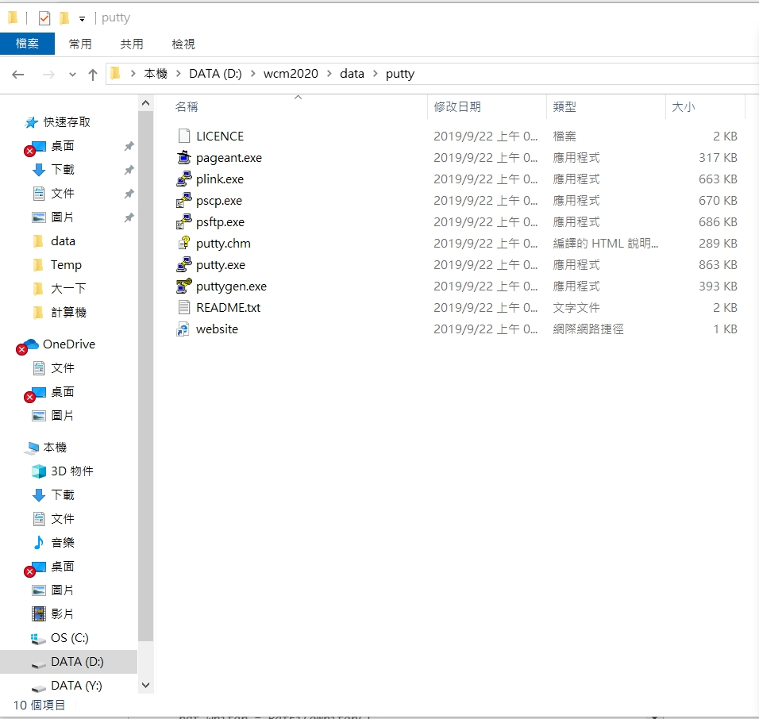
load(載入) 將 id_rsa 轉為 Putty 可以解讀的 .ppk 格式 並且 Save private key
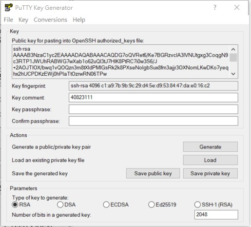
(4)開啟 github settings 中的 SSH and GPD keys
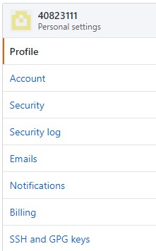
新建New Key 把public key的碼放入(用scite 開啟)
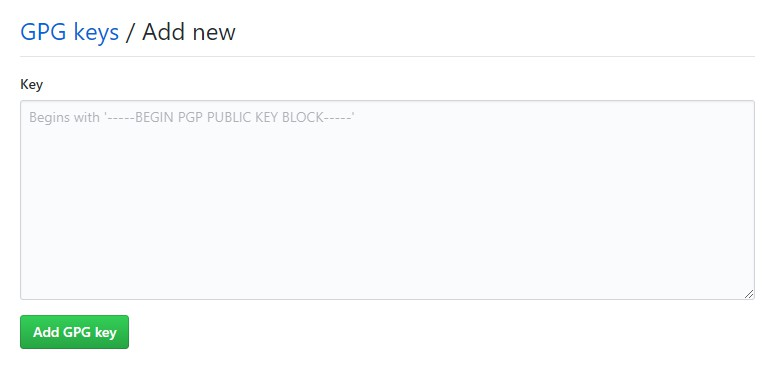
(5)修改啟動的 start.bat 加入下列設定
set GIT_HOME=%Disk%:\portablegit\bin\
set GIT_SSH=%Disk%:\putty\plink.exe
設定putty
(1)home 下的 .ssh 目錄中的 config 設定檔案為
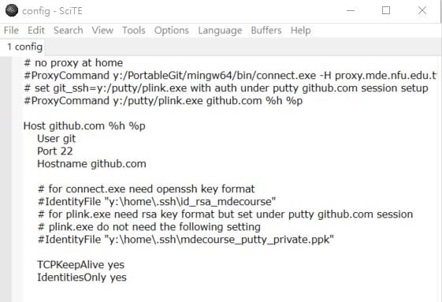
# no proxy at home
#ProxyCommand y:/PortableGit/mingw64/bin/connect.exe -H proxy.mde.nfu.edu.tw:3128 %h %p
# set git_ssh=y:/putty/plink.exe with auth under putty github.com session setup
ProxyCommand y:/putty/plink.exe github.com %h %p
Host github.com
User git
Port 22
Hostname github.com
# for connect.exe need openssh key format
#IdentityFile "y:\home\.ssh\id_rsa_mdecourse"
# for plink.exe need rsa key format but set under putty github.com session
# plink.exe do not need the following setting
#IdentityFile "y:\home\.ssh\mdecourse_putty_private.ppk"
TCPKeepAlive yes
IdentitiesOnly yes
(2)wcm2020 倉儲中 .git 目錄下的 config 檔案中的連線協定, 由 https 改為採 ssh 連 線
[core]
repositoryformatversion = 0
filemode = false
bare = false
logallrefupdates = true
symlinks = false
ignorecase = true
[submodule]
active = .
[remote "origin"]
#url = https://github.com/mdecourse/wcmj2020.git
url = git@github.com:mdecourse/wcmj2020.git
fetch = +refs/heads/*:refs/remotes/origin/*
[branch "master"]
remote = origin
merge = refs/heads/master
[submodule "cmsimde"]
url = https://github.com/mdecourse/cmsimde.git
(3)進入putty.exe 進行編輯
設定代理主機
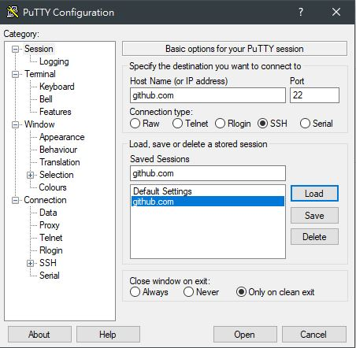
設定代理主機(Proxy) 除非是IPV4 IPV6
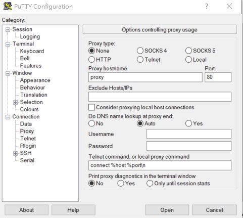
設定SSH的 ppk private key (之前轉的APK)
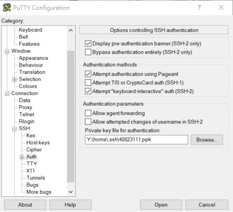
之後就可以透過近端的 .ppk private key 與 Github.com 上的 public key 對應, 無需輸入帳號密碼就可以進行 git push
W16-W17 <<
Previous Next >> 網頁Cmsimde 建立方法